Ensamblaje de la bomba
Este diseño está basado en Open-Source Syringe Pump desarrollado por Andrey Samokhin
Herramientas
Electrónica
Mecánica
- 1 acople flexible de aluminio
- 1 caja de cambios 100:1
- 4 inserto roscado M3
- 2 rodamiento lineal
- 2 tornillo M3 10mm
- 2 tornillo M3 12mm
- 4 tornillo M3 16mm
- 2 tornillo M3 20mm
- 4 tornillo M3 8mm
- 4 tornillo M4 10mm
- 1 tuerca de varilla roscada
- 2 tuerca M3
- 2 varilla lisa
- 1 varilla roscada
Piezas Plásticas
Debes construir al menos 02 bombas de jeringa para experimentos de microfluídica de gotas.
Step 1: Ensambla el motor paso a paso y la caja de cambios
Inserta el eje del motor NEMA 17 en la caja de cambios y fíjala a la carcasa usando cuatro tornillos M3 8mm. Usa una llave Allen M3 para apretarlos.
Luego, utiliza la misma llave Allen para apretar los dos tornillos de sujeción dentro de la caja de cambios y conectar el eje del motor a los engranajes. Asegúrate de que uno de los tornillos de sujeción esté alineado con la parte plana del eje del motor, si es que tiene una.

Step 2: Ensambla la caja de cambios, el soporte posterior y la varilla roscada
Toma el soporte posterior - A, cuatro insertos roscados M3 y colócalas en cada agujero de esta pieza impresa como se muestra a continuación. Aplica calor a cada inserto (usando un soldador) y usa una fuerza suave para empujarlos hasta su lugar, como se describe en la guía para usar insertos roscados
 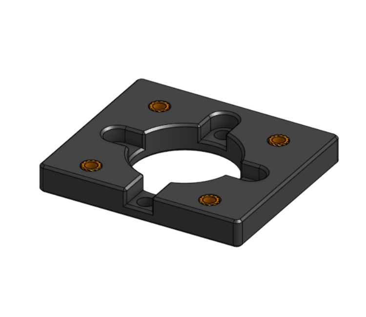
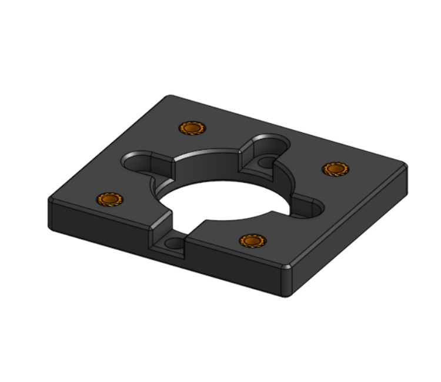
Toma cuatro tornillos M4 10mm y una llave Allen M4 para fijar el soporte posterior - A a la caja de cambios. Asegúrate de que la orientación de la pieza sea correcta. El tornillo indicado debe estar opuesto al conector eléctrico del motor paso a paso.


Inserta el eje de la caja de cambios a la mitad dentro del acople flexible de motor y luego apriétalo. Usa una una llave Allen M2 para ajustar el acople.
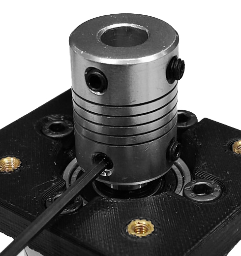
Toma cuatro tornillos M3 16mm para fijar el soporte posterior - B a la pieza A. Asegúrate de que los agujeros del soporte B estén alineados con las insertos roscados.
 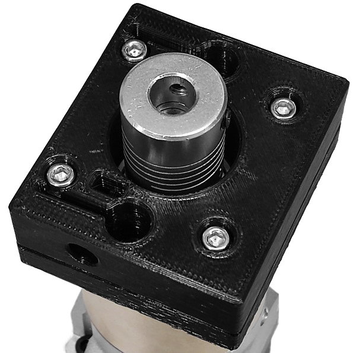
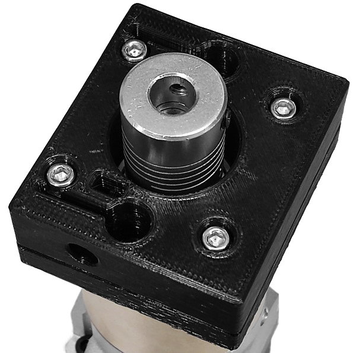
Toma la varilla roscada e insértalo en el acople flexible de motor. Luego, aprieta el acople sobre la varilla.
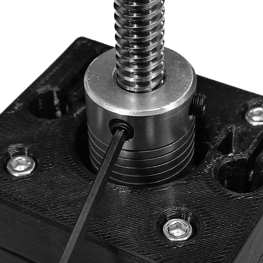
Toma dos tuercas M3, insértalas en el soporte posterior - B y presiónalas hasta el fondo. Usa cualquier herramienta que necesites para empujarlas. Asegúrate de que estén alineadas con los agujeros del soporte. Luego, toma dos tornillos M3 10mm y enróscalos para sostener las tuercas. Usa una llave Allen M3.

Step 3: Ensambla e implementa el carruaje
Inserta la tuerca de la varilla roscada en el carruaje y fíjala al carruaje con dos tornillos M3 16mm y dos tuercas M3. Inserta los tornillos desde el lado opuesto para sujetar bien la tuerca de la varilla.

 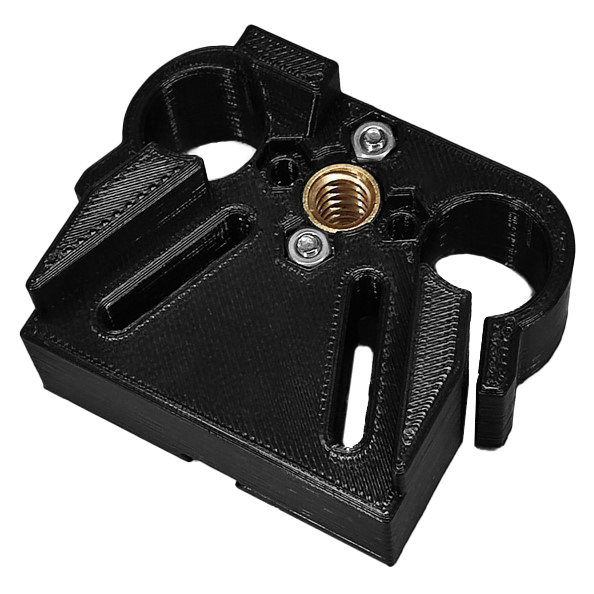
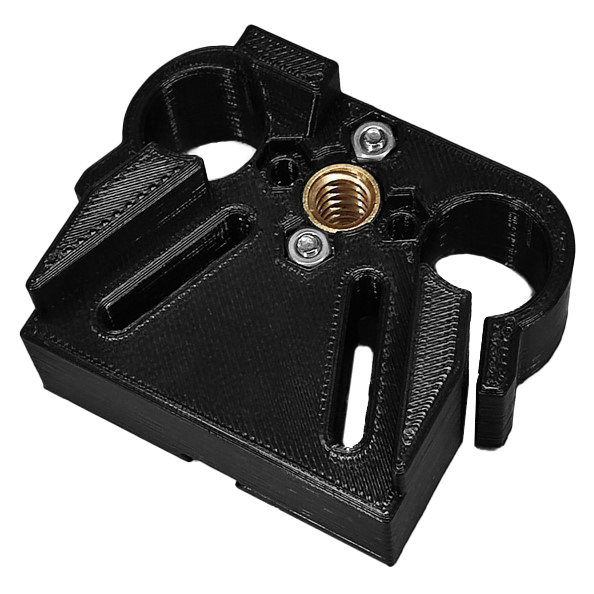
Toma el carruaje, luego toma los rodamientos lineales e insértalos en los laterales del carruaje. Después, toma dos tuercas M3 e insértalas en el carruaje y presiónalas. Usa cualquier herramienta que necesites para empujarlas. Asegúrate de que estén alineadas con los agujeros. Toma dos tornillos M3 12mm y una llave Allen M3 para fijar los rodamientos.

Inserta la varilla en la tuerca. Luego, enróscalo manualmente hasta la mitad de la varilla como se muestra a continuación.
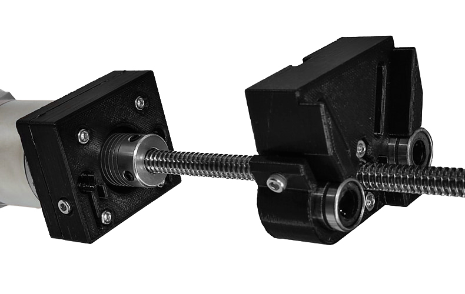
Empuja los rieles lineales a través de los rodamientos del [carruaje] e insértalos en el soporte posterior - B, uno por el lado izquierdo y otro por el derecho. Asegúrate de que entren correctamente en los agujeros y luego empújalos hasta el fondo. Fíjalos al soporte posterior B.

Step 4: Ensambla el soporte frontal, las perillas y los ajustes de jeringas
Toma el soporte frontal, dos insertos roscados M3 y colócalas en cada agujero de esta pieza impresa. Aplica calor a cada inserto (usando un soldador) y usa una fuerza suave para empujarlos hasta su lugar, como se describe en la guía para usar insertos roscados
Insertatuercas M3 en las cavidades del soporte frontal. Usa cualquier herramienta para empujarlas. Asegúrate de que estén alineadas con los agujeros del soporte. Toma dos tornillos M3 16mm y enróscalos lo suficiente para sostener las tuercas.


Inserta una tuerca M3 en la cavidad de la perilla. Toma tornillo M3 20mm y enróscalo por completo. Repite este paso con la segunda perilla.
Step 5: Ensambla el soporte frontal y los rieles lineales
Alinea los rieles lineales con el soporte frontal para asegurarte de que entren correctamente en los agujeros y luego presiónalos. Fija los rieles lineales al soporte frontal.
 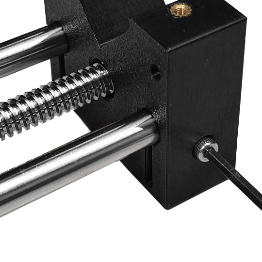
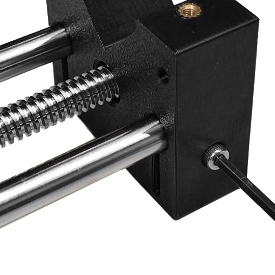
Finalmente, toma el ajuste de jeringa y colócalo en el soporte frontal. Asegúrate de que los agujeros de ambas piezas estén alineados. Toma las dos perillas y enróscalas un poco.
 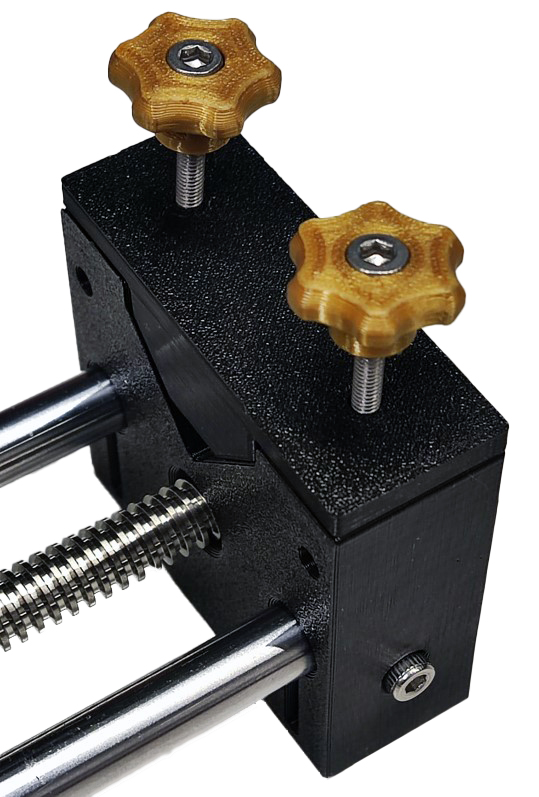
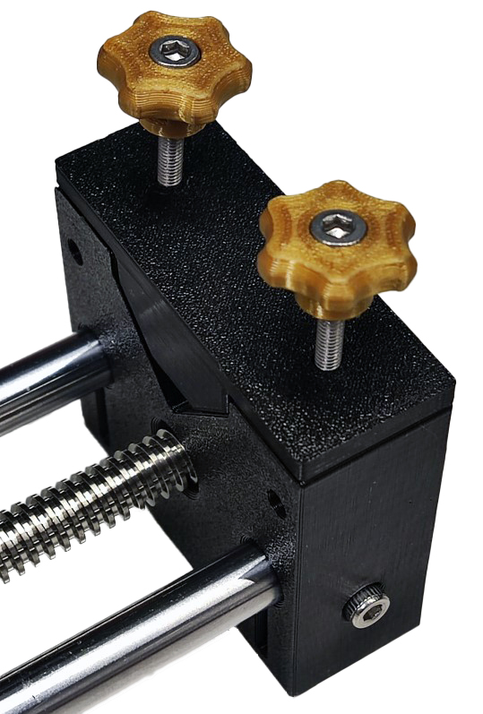
La bomba de jeringa esta lista para ser usada.
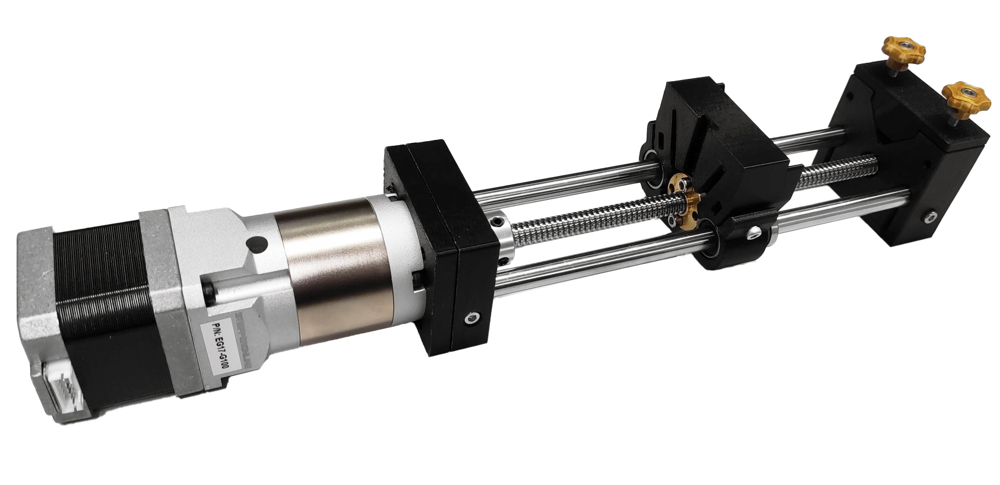